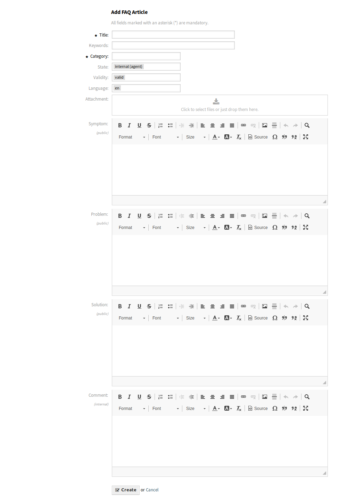

Neu¶
Verwenden Sie diese Ansicht, um neue FAQ-Artikel dem System hinzuzufügen. Die Ansicht zum Hinzufügen von FAQ-Artikeln ist unter dem Menüeintrag Neu im Menü FAQ verfügbar.

FAQ-Artikel hinzufügen
Die folgenden Einstellungen sind verfügbar, wenn Sie diese Ressource hinzufügen oder bearbeiten. Die mit einem Sternchen gekennzeichneten Felder sind Pflichtfelder.
- Titel *
- Der Name der Ressource. In dieses Feld können beliebige Zeichen eingegeben werden, einschließlich Großbuchstaben und Leerzeichen. Der Name wird in der Übersichtstabelle angezeigt.
- Schlüsselwort
- Fügen Sie einige Schlüsselwörter hinzu, damit der FAQ-Artikel leichter gefunden werden kann.
- Kategorie *
Wählen Sie eine Kategorie aus den verfügbaren Kategorien.
Siehe auch
Kategorien können in Kategorienverwaltung verwaltet werden.
- Status
Wählen Sie den Status eines FAQ-Artikels. Mögliche Status sind:
- extern (Kunde)
- Der FAQ-Artikel ist sichtbar für Agenten und am externen Interface angemeldete Kundenbenutzer.
- intern (Agent)
- Der FAQ-Artikel ist nur für Agenten sichtbar.
- öffentlich (Alle)
- Der FAQ-Artikel ist für alle sichtbar.
- Gültigkeit
- Setzt die Gültigkeit dieser Ressource. Jede Ressource kann nur in OTRS verwendet werden, wenn dieses Feld auf gültig gesetzt ist. Wenn Sie dieses Feld auf ungültig oder ungültig-temporär setzen, wird die Nutzung der Ressource deaktiviert.
- Sprache
Wählen Sie eine Sprache aus der Liste der verfügbaren Sprachen.
Siehe auch
Sprachen können in Sprachenverwaltung verwaltet werden.
- Anhang
- Es ist möglich, Anhänge zu FAQ-Artikeln hinzuzufügen. Klicken Sie auf das Feld, um einen Anhang hinzuzufügen oder legen Sie Dateien direkt hier ab.
- Symptom
- Geben Sie eine Beschreibung ein, die die derzeitige Situation näher beschreibt.
- Problem
- Detailliertere Informationen über das Problem.
- Lösung
- Wie man das Problem lösen kann.
- Kommentar
- Interner Text über den FAQ-Artikel, nur für Agenten.